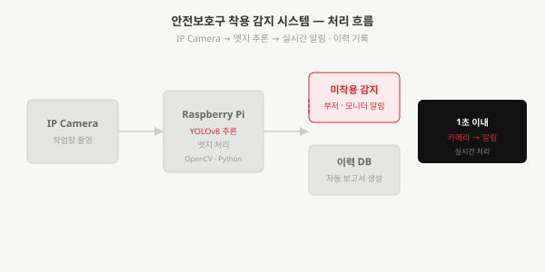
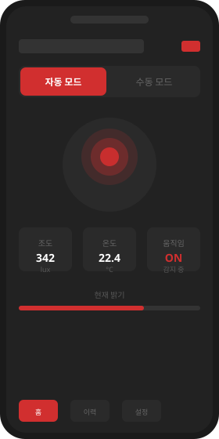
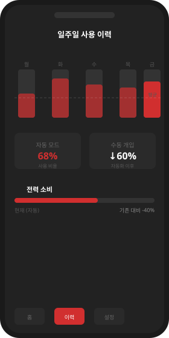
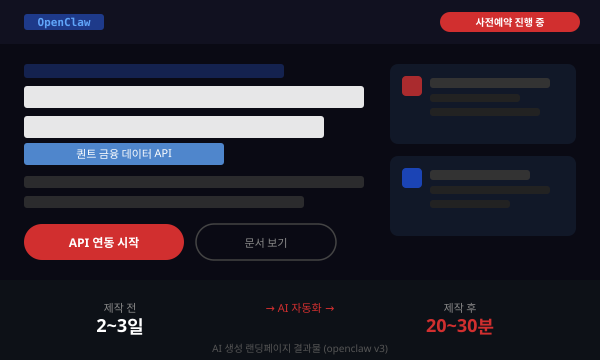

채용 포트폴리오 · 2026
박세준
생각을 시스템으로 바꾸는 엔지니어.
모르는 분야도 구조를 파악하여 실제 결과물로 끝냅니다.
전자공학·창업·AI 자동화를 거치며
그 실행 방식을 직접 증명해왔습니다.
결과가 나올 때까지 분해·실행·검증을 반복합니다.
하드웨어
STM32 · ESP32 · 회로 설계 · FSM 펌웨어 · IoT 센서
소프트웨어
Python · FastAPI · React+TypeScript · Next.js · Flutter
AI·자동화
YOLOv8 · Claude API · Gemini API · 멀티에이전트 파이프라인 · Playwright
인프라
Docker Compose · PostgreSQL · 마이크로서비스 · MQTT · NCP
운영·문서
사업계획서 · IR 피칭 · 공공기관 보고서 · 예산 정산
#실전_프로젝트
하드웨어 설계 → 소프트웨어 구현 → 서비스 운영까지
실전 프로젝트 3개 · 9개 대회 수상 · 예비창업패키지 선정
실전 프로젝트 01 · 예비창업패키지 선정 · 9개 대회 수상
Keyword
도심 집중호우 시 빗물받이 막힘이 침수의 주요 원인이지만, 현행 방식은 담당자 수동 순찰 + 민원 접수로 사후 대응만 가능했습니다. STM32 기반 FSM 펌웨어로 로봇을 제어하고, FastAPI + PostgreSQL + Docker 백엔드와 Naver Maps + GeoJSON 기반 웹 대시보드까지 전 구간을 혼자 구현했습니다. 기술 개발과 동시에 사업계획서 작성·공공기관 제출·예산 정산까지 1인이 전담했습니다.
코드를 작성하면서 동시에 "이 사업을 어떻게 운영할 것인가"를 고민하며 실행했고, 그 과정에서 쌓인 경험 모두를 총무 직무에서 활용하겠습니다.
기술 스택
수상 실적
기후테크 최우수상 포함 9개 대회 수상
예비창업패키지 선정 — 정부 사업화 검증 통과
기술 성과
현장 피드백 기반 기능 반복 개선
코드 200줄 이상 감소 (네이버 지도 전환 최적화)
직무 연결
공공기관 서류·사업계획서·예산 집행·정산
전 과정 직접 수행 — 총무 직무 즉시 적용 가능
실전 프로젝트 02 · 컴퓨터비전 + 임베디드
Keyword
산업 안전은 처음 접하는 도메인이었지만, 현장 인터뷰와 규정 조사로 요구사항을 직접 정의하고 기술로 해결했습니다. YOLOv8 기반 실시간 객체 감지로 헬멧·안전조끼 착용 여부를 분류하고, IP 카메라 영상을 Raspberry Pi 엣지 장치에서 처리하여 카메라 입력에서 알림까지 1초 이내 처리를 달성했습니다. 감지 이력 로그 기반 주간 안전 보고서를 자동 생성하는 기능도 직접 구현했습니다.
낯선 분야에서도 구조를 먼저 파악한 뒤 실행에 옮기는 방식을 이 프로젝트에서 다시 한번 적용했습니다. 이 방식이 총무 직무에서도 그대로 통할 것이라고 확신합니다.

처리 속도
카메라 입력에서 알림까지 1초 이내 실시간 처리
IP Camera → Raspberry Pi 엣지 추론 → 부저·모니터 알림
현장 담당자 피드백
"순회 없이 실시간으로 파악할 수 있다"
지자체 현장 담당자 인터뷰
자동 보고서
감지 이력 DB → 주간 안전 보고서 자동 생성
총무 정례 보고 자동화에 동일 방식 적용 가능
실전 프로젝트 03 · IoT · 임베디드 + 앱 연동
Keyword
조도·온도·움직임 센서를 MCU에 연결해 환경 데이터를 수집하고, BLE/Wi-Fi로 스마트폰 앱과 연결하여 수동 제어 + 자동 모드 전환을 구현했습니다. 하드웨어·펌웨어·통신·앱 4개 레이어를 혼자 설계하고 통합했습니다. 각 레이어의 경계를 정의하고 인터페이스를 설계하는 방식은 총무가 여러 부서의 업무를 동시에 조율하는 구조와 정확히 같습니다.
복잡한 시스템을 작은 단위로 나눠 각 영역을 조율하면서 완성까지 이끌어 낸 경험 — 이 구조가 총무 직무의 다중 업무 조율 방식과 동일합니다.


100ms
센서 → 조명 변화 지연
60%↓
자동 모드 후 수동 개입 감소
40%↓
기존 스마트 조명 대비 전력 절감
#AI_자동화
랜딩페이지 제작 시간 90% 단축 (2~3일 → 3~5분)
총무 업무의 반복 작업을 AI 파이프라인으로 대체할 수 있습니다
AI 자동화 01 · 멀티에이전트 · Claude Haiku/Sonnet + Gemini API
Keyword
쇼핑몰 상세페이지 1개 제작에 기획→카피→디자인→이미지→조합 다섯 단계로 반나절이 소요됐습니다. 5단계 에이전트 파이프라인으로 분리하고 분석·카피는 Sonnet(품질 우선), 정보 수집·디자인은 Haiku(비용 최적화)로 역할을 분담했습니다. 품질 기준을 규칙으로 명문화해 AI가 자동 검수하도록 설계했습니다.
반복 문서 작업(공문·보고서 양식)을 동일한 파이프라인 방식으로 자동화하겠습니다. AI 파이프라인 설계 경험을 바탕으로 총무 업무 자동화를 즉시 제안하고 실행하겠습니다.

핵심 결과
제작 시간 90% 단축 — 2~3일 → 3~5분
openclaw 등 실제 상품 페이지 다수 생성 완료
13섹션 완성 규격
1,200px 고정 너비 · 약 7,000px 높이
섹션별 개별 재생성 가능
JSON 중간 산출물로 특정 단계만 재실행
실전 프로젝트 3개 · AI 자동화 6개 · 기타 프로젝트 — 총 12개
AI 자동화 프로젝트
기타 프로젝트
01
모르는 분야도 단계로 쪼개 끝낸다
전자공학 → IoT → 컴퓨터비전 → AI 자동화, 비전문 영역 9개 이상 프로젝트 완료
02
기술과 운영을 동시에 다룬다
예비창업패키지 — 기술개발·회계·발주·공문·IR을 1인 전담 수행
03
사람이 할 일을 가려낸다
AI 자동화 6개 — 랜딩페이지 90% 단축 · 데이터 수집·PPT·보고서 자동화
04
기술을 언어로 번역한다
IR 피칭 직접 제작·발표 · 공공기관 보고서 · 블로그 12개 포스트 직접 운영
THANK YOU
전자공학·창업·AI 자동화의 관심, 경험, 실행력을
귀사에서 풀어내겠습니다
박세준 — 채용 포트폴리오 2026